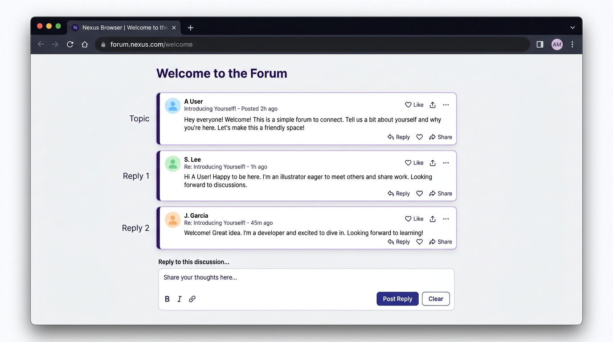
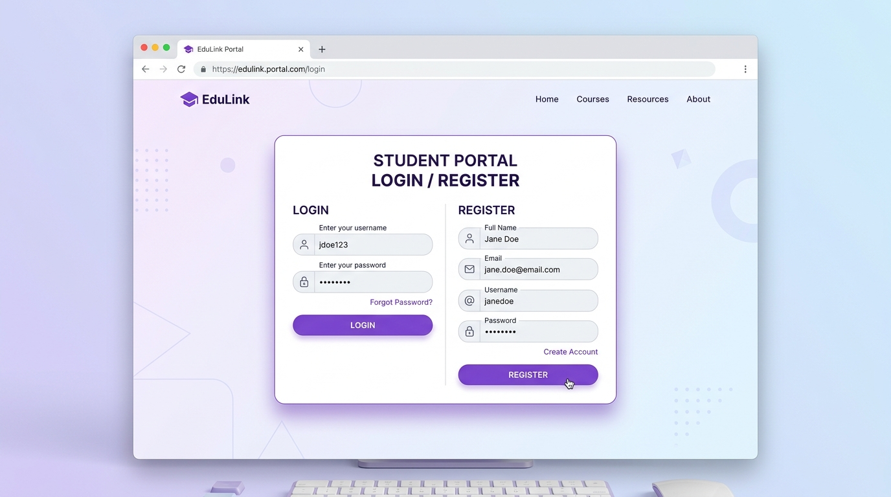
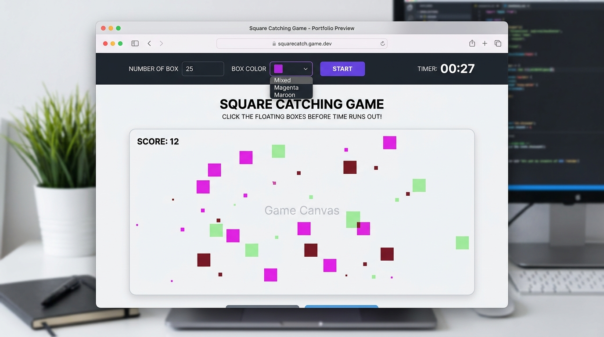
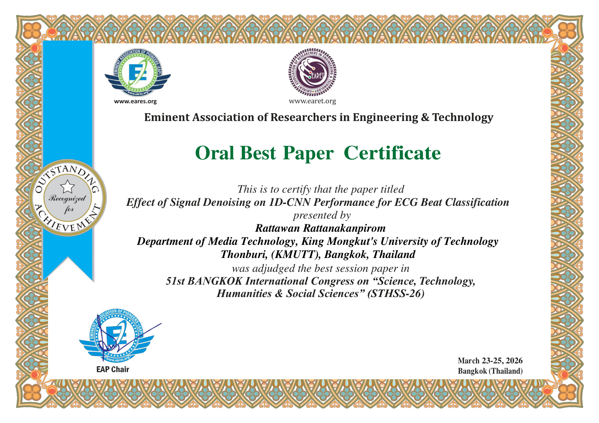
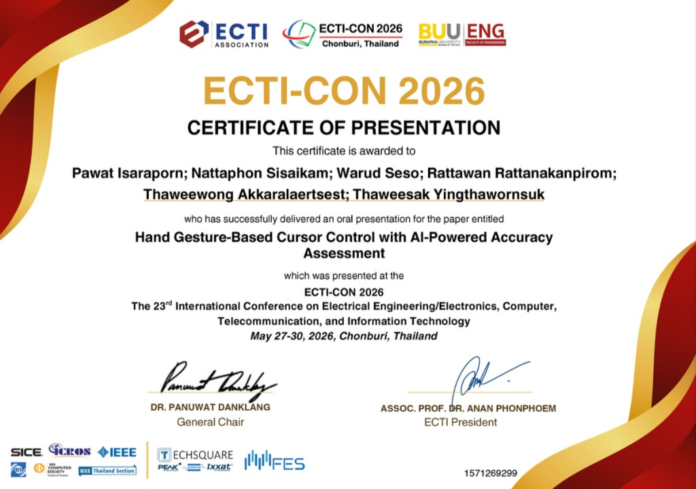
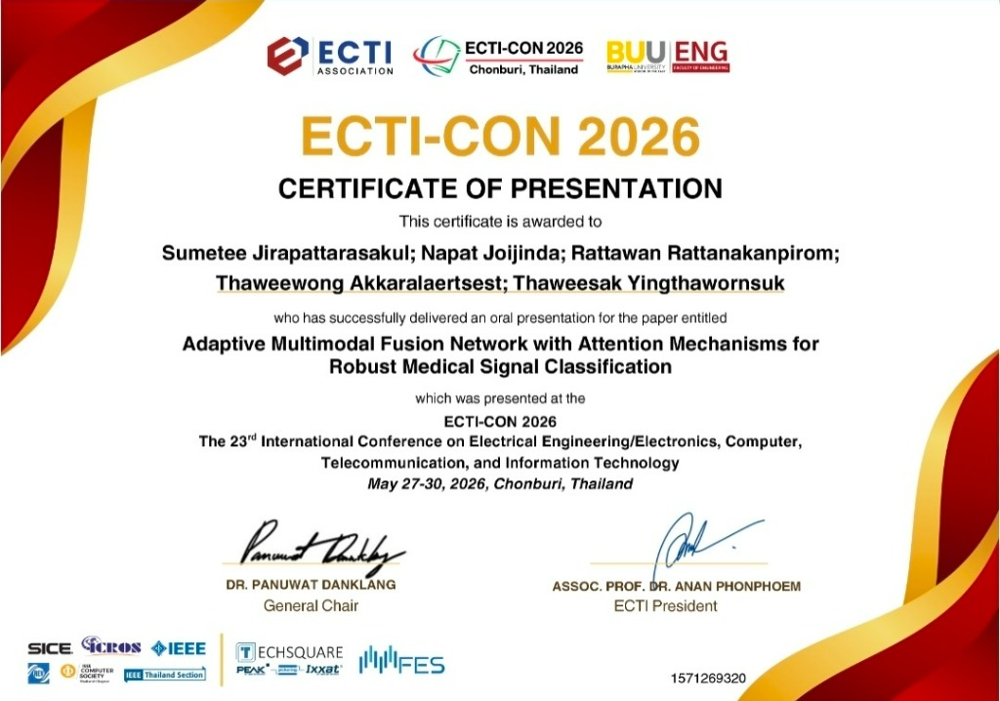
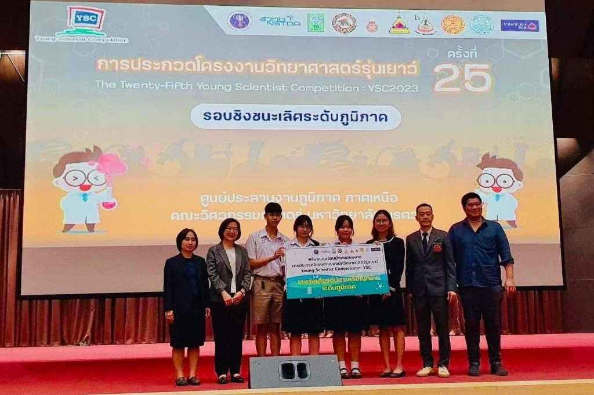
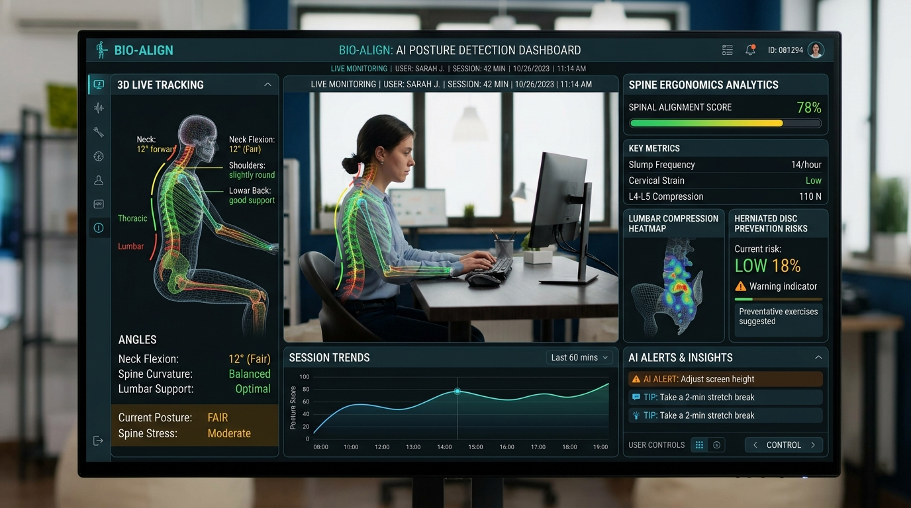

ข้อมูลการติดต่อ
Contact & Personal Information| ช่องทางการติดต่อและข้อมูลส่วนบุคคล | |
|---|---|
| อีเมล (Email) |
rattawan.ratt@kmutt.ac.th (มหาวิทยาลัย)
|
rattawan.rkr@gmail.com (ส่วนตัว)
|
| เบอร์โทรศัพท์ (Phone) |
099-727-6445
|
| โซเชียลมีเดีย (Facebook) | |
| งานอดิเรก (Hobbies) |
ถ่ายภาพวาดภาพ
ฟังเพลง
เล่นเกม
|
| ความสนใจ (Interests) |
Front-End Web Development
Interactive Media & Animations
UI/UX Design Systems
|
| ข้อมูลส่วนบุคคลพื้นฐาน | สัญชาติ: ไทย | ศาสนา: พุทธ | ภาษา: ไทย (Native), อังกฤษ (Professional Working Proficiency) |
| ที่อยู่ติดต่อปัจจุบัน (ไทย) | Current Address (English) |
|
โครงการร่วมบริหารหลักสูตรฯ (มีเดีย) คณะสถาปัตยกรรมศาสตร์และการออกแบบ มหาวิทยาลัยเทคโนโลยีพระจอมเกล้าธนบุรี 126 ถ.ประชาอุทิศ แขวงบางมด เขตทุ่งครุ กรุงเทพฯ 10140 |
Media Arts and Technology School of Architecture and Design King Mongkut’s University of Technology Thonburi 126 Pracha-Utit Rd., Bangmod, Thung-kru, Bangkok 10140 |
ประวัติการศึกษา
Education History| ปี พ.ศ. | ระดับการศึกษา / สาขาวิชา | สถาบันการศึกษา |
|---|---|---|
|
2567 - ปัจจุบัน (คาดว่าจะสำเร็จการศึกษา 2570) |
ระดับปริญญาตรี (วท.บ.) หลักสูตรวิทยาศาสตรบัณฑิต สาขาวิชาเทคโนโลยีมีเดีย (Media Technology) คณะสถาปัตยกรรมศาสตร์และการออกแบบ เกรดเฉลี่ยสะสม (GPAX): 3.27 / 4.00 |
มหาวิทยาลัยเทคโนโลยีพระจอมเกล้าธนบุรี (มจธ.) King Mongkut’s University of Technology Thonburi |
| 2564 - 2566 |
มัธยมศึกษาตอนปลาย แผนการเรียนSMTE เกรดเฉลี่ยสะสม (GPAX): 3.61 / 4.00 |
โรงเรียนพิษณุโลกพิทยาคม (SMTE) |
ทักษะและความสามารถ
Technical Skills & Proficiencies| หมวดหมู่ทักษะ | รายการทักษะและเครื่องมือที่สามารถใช้งานได้ |
|---|---|
|
การพัฒนาเว็บไซต์ (Web Development) การเขียนโค้ดตามมาตรฐานเว็บสากล |
HTML5 Semantic
CSS3 (Flexbox & Grid)
JavaScript (ES6+)
DOM Manipulation
Responsive Web Design
Git & GitHub
Web Accessibility (a11y)
|
|
งานออกแบบและสื่อดิจิทัล (Design & Media Tools) การจัดทำส่วนติดต่อผู้ใช้และกราฟิก |
Figma (UI/UX & Prototyping)
Adobe Photoshop
Adobe Illustrator
Adobe Premiere Pro
|
|
ทักษะภาษาและการทำงาน (Languages & Soft Skills) การสื่อสารและการทำงานร่วมกับทีม |
|
งานที่ทำในห้องเรียน (Assignments)
In-Class Web Programming Tasks (Slide 7) Assignment #3
Assignment #3
Cinnamon Roll Wreath with Apples
หน้าเว็บสูตรขนมพวงมาลัยซินนามอนโรล จัดโครงสร้างเนื้อหาและรูปภาพด้วย CSS Box Model & Flexbox พร้อมลูกเล่นขีดฆ่าวัตถุดิบด้วย JavaScript
 Assignment #4
Assignment #4
Easy Cheesy Pizza Dip
หน้าสูตรอาหารพิซซ่าดิปกระทะเหล็กหล่อ จัดเลย์เอาต์หน้าจอด้วย CSS Grid Layout และ Typography พร้อมระบบบันทึกเช็กขั้นตอนการทำ

Assignment #5Blogger & Forum
เว็บบอร์ดแสดงความคิดเห็นจำลอง จัดการ DOM สดด้วย JavaScript เพื่อโพสต์ข้อความลงในช่อง Topic, Reply 1, Reply 2 พร้อมปุ่ม Clear ล้างข้อความ

Assignment #6Register & Login System
ระบบฟอร์มสมัครสมาชิกและเข้าสู่ระบบ ตรวจสอบความถูกต้องของรหัสผ่าน (Form Validation) และจัดเก็บข้อมูลบัญชีผู้ใช้ด้วย LocalStorage

Assignment #7Square Clicking Game
มินิเกมคลิกเก็บกล่องตามสีที่เลือก สุ่มตำแหน่งและสร้าง DOM กล่องสี่เหลี่ยม พร้อมจับเวลาถอยหลัง (Timer Clock) และระบบนับคะแนน
ผลงานและโครงงานที่โดดเด่น
Featured Projects & Selected Works
รวมข้อเสนอโครงงานปริญญานิพนธ์ (ระบบประเมินความเสี่ยงต้อกระจกด้วย Deep Learning) และผลงานวิจัย 4 โครงงาน
| ตัวอย่างภาพผลงาน | รายละเอียดโปรเจกต์และหน้าที่ความรับผิดชอบ |
|---|---|
|
 |
1. Effect of signal Denoising on 1D-CNN performance for ECG Beat ClassificationOral Best Paperเวทีวิชาการ: 51st BANGKOK International Congress (STHSS-26) / EARET | เทคโนโลยี: Python, PyTorch, 1D-CNN, Signal Denoising ผลงานวิจัยที่ได้รับรางวัล Oral Best Paper Certificate (Best Session Paper) ศึกษาและวิเคราะห์ผลกระทบของการลดสัญญาณรบกวน (Signal Denoising) ต่อประสิทธิภาพของโครงข่ายประสาทเทียม 1D-CNN ในการจำแนกคลื่นไฟฟ้าหัวใจ (ECG Beat Classification) เพื่อเพิ่มความแม่นยำในการคัดกรองความผิดปกติของจังหวะหัวใจ
|
|
 |
2. Hand Gesture-Based Cursor Control with AI-Powered Accuracy AssessmentECTI-CON 2026 Oralการประชุมวิชาการ: ECTI-CON 2026 | เทคโนโลยี: Computer Vision, OpenCV, MediaPipe, AI Accuracy Assessment โครงงานพัฒนาระบบควบคุมเคอร์เซอร์เมาส์ด้วยท่าทางมือแบบเรียลไทม์ พร้อมระบบประเมินความแม่นยำด้วยปัญญาประดิษฐ์ (AI-Powered Accuracy Assessment) เพื่อยกระดับประสบการณ์การโต้ตอบระหว่างมนุษย์และคอมพิวเตอร์ (HCI)
|
|
 |
3. Adaptive Multimodal Fusion Network with Attention Mechanisms for Robust Medical Signal ClassificationECTI-CON 2026 Oralการประชุมวิชาการ: ECTI-CON 2026 | เทคโนโลยี: Multimodal Deep Learning, Attention Mechanisms, Medical AI การออกแบบโครงข่ายประสาทเทียมแบบผสานรวมข้อมูลหลายรูปแบบ พร้อมกลไกความสนใจ (Attention Mechanisms) เพื่อจำแนกและวินิจฉัยสัญญาณทางการแพทย์ได้อย่างแม่นยำและทนทานต่อสัญญาณรบกวนในสภาพแวดล้อมจริง
|
|
 |
4. การพัฒนานวัตกรรมป้องกันการเกิดโรคหมอนรองกระดูกสันหลังทับเส้นประสาทด้วยเทคโนโลยีปัญญาประดิษฐ์ชนะเลิศเหรียญทอง YSC 2023เวทีการแข่งขัน: การประกวดโครงงานของนักวิทยาศาสตร์รุ่นเยาว์ (YSC 2023) | รางวัล: ชนะเลิศเหรียญทองระดับภูมิภาค ภาคเหนือ สาขาคอมพิวเตอร์ นวัตกรรมตรวจจับและวิเคราะห์พฤติกรรมการนั่งทำงานเพื่อป้องกันโรคหมอนรองกระดูกสันหลังทับเส้นประสาท ด้วยการประมวลผลมุมกระดูกสันหลังแบบเรียลไทม์ผ่าน AI Pose Estimation พร้อมระบบแจ้งเตือนเชิงรุก
|
|
 |
5. The Sitting Posture Detection System Prevents Herniated Disc Using AI TechnologyThe Silver Award ICIA 2023เวทีระดับนานาชาติ: International Conference on Innovative Application (ICIA 2023) | รางวัล: The Silver Award ระบบซอฟต์แวร์อัจฉริยะวิเคราะห์ท่านั่งเพื่อป้องกันหมอนรองกระดูกสันหลังเสื่อมหรือทับเส้นประสาท ประเมินมุมและท่าทางแบบ Non-invasive ช่วยปรับปรุงพฤติกรรมการนั่งและลดความเสี่ยงปัญหาสุขภาพระยะยาว
|
ประสบการณ์การทำงานและกิจกรรม
Work Experience & Extracurricular Activities| ปี พ.ศ. | ตำแหน่ง / หน้าที่ความรับผิดชอบ / องค์กร |
|---|---|
| 2567 |
ทีมงานฝ่ายมีเดียและเทคโนโลยี (Staff), งาน KMUTT Open House
|
| 2567 | เป็นคณะกรรมการองค์การนักศึกษามหาวิทยาลัยเทคโนโลยีพระจอมเกล้าธนบุรี, มหาวิทยาลัยเทคโนโลยีพระจอมเกล้าธนบุรี |
รางวัลและประกาศนียบัตร
Honors, Awards & Certifications| ปี พ.ศ. | รายละเอียดรางวัล / เกียรติบัตร / สถาบันผู้ออกให้ |
|---|---|
| 2569 (2026) |
Oral Presentation (การนำเสนอผลงานวิจัยระดับนานาชาติ 2 บทความ) — The
23rd International Conference on Electrical Engineering/Electronics, Computer,
Telecommunications and Information Technology (ECTI-CON 2026)
|
| 2569 (2026) |
รางวัล Oral Best Paper Certificate (Best Session Paper) — 51st
BANGKOK
International Congress on "Science, Technology, Humanities & Social Sciences"
(STHSS-26) โดย Eminent Association of Researchers in Engineering & Technology
(EARET)
Paper Title: Effect of Signal Denoising on 1D-CNN Performance for ECG Beat Classification |
| 2566 |
รางวัลชนะเลิศเหรียญทอง ระดับภูมิภาค สาขาคอมพิวเตอร์ ภาคเหนือ —
การประกวดโครงงานของนักวิทยาศาสตร์รุ่นเยาว์ (YSC 2023: Young Scientist Competition)
ผลงาน: การพัฒนานวัตกรรมป้องกันการเกิดโรคหมอนรองกระดูกสันหลังทับเส้นประสาทด้วยเทคโนโลยีปัญญาประดิษฐ์ |
| 2566 |
The Silver Award (รางวัลระดับนานาชาติ) — International Conference
on Innovative Application (ICIA 2023)
Project: The Sitting Posture Detection System Prevents Herniated Disc Using AI Technology |
แหล่งอ้างอิงและบุคคลอ้างอิง
References & Resource Citations| บุคคลอ้างอิงทางวิชาการ (Academic & Professional References) | |
|---|---|
| อาจารย์ที่ปรึกษา / อาจารย์ผู้สอน |
ดร. เกจแก้ว ธนะสถิตย์ (Dr. Kejkaew Thanasuan) อาจารย์ประจำรายวิชา MDT312 การเขียนโปรแกรมบนเว็บ (Web Programming) โครงการร่วมบริหารหลักสูตรมีเดียอาตส์และเทคโนโลยีมีเดีย มหาวิทยาลัยเทคโนโลยีพระจอมเกล้าธนบุรี (มจธ.) อีเมลติดต่อ: kejkaew.tha@kmutt.ac.th |
| สังกัดภาควิชาและที่อยู่ |
คณะสถาปัตยกรรมศาสตร์และการออกแบบ มหาวิทยาลัยเทคโนโลยีพระจอมเกล้าธนบุรี 126 ถนนประชาอุทิศ แขวงบางมด เขตทุ่งครุ กรุงเทพฯ 10140 |
| แหล่งอ้างอิงทรัพยากรการพัฒนาและการออกแบบ (Resource & Design Citations) | |
| แบบอักษร (Typography) | Google Fonts: Plus Jakarta Sans (โดย Tokotype) และ Prompt (โดย Cadson Demak) ภายใต้ลิขสิทธิ์ Open Font License (OFL) |
| มาตรฐานการพัฒนาเว็บ | HTML5 Semantic Markup, CSS3 Flexible Box & Grid Layout ตามมาตรฐาน World Wide Web Consortium (W3C), และ JavaScript (ECMAScript 2020+) แบบ External Script (script.js) |
| สื่อภาพและผลงาน | ภาพผลงานและรูปภาพประกอบโครงงานจัดทำและออกแบบโดย นางสาว รัตตวัลย์ รัตนกรรภิรมย์ Rattawan Rattanakanpirom ด้วยโปรแกรม Figma, Adobe Illustrator และ Adobe Photoshop เพื่อใช้ประกอบแฟ้มสะสมผลงานรายวิชา MDT312 |